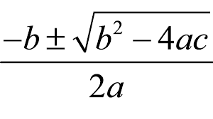
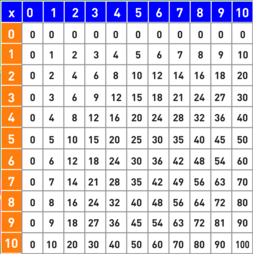
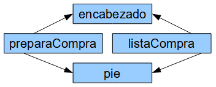

El lenguaje PHP¶
Duración y criterios de evaluación
Duración estimada: 26 sesiones
Resultado de aprendizaje:
- Escribe sentencias ejecutables por un servidor Web reconociendo y aplicando procedimientos de integración del código en lenguajes de marcas.
Criterios de evaluación:
- Se han reconocido los mecanismos de generación de páginas Web a partir de lenguajes de marcas con código embebido.
- Se han identificado las principales tecnologías asociadas.
- Se han utilizado etiquetas para la inclusión de código en el lenguaje de marcas.
- Se ha reconocido la sintaxis del lenguaje de programación que se ha de utilizar.
- Se han escrito sentencias simples y se han comprobado sus efectos en el documento resultante.
- Se han utilizado directivas para modificar el comportamiento predeterminado.
- Se han utilizado los distintos tipos de variables y operadores disponibles en el lenguaje.
- Se han identificado los ámbitos de utilización de las variables.
Resultado de aprendizaje:
- Escribe bloques de sentencias embebidos en lenguajes de marcas, seleccionando y utilizando las estructuras de programación.
Criterios de evaluación:
- Se han utilizado mecanismos de decisión en la creación de bloques de sentencias.
- Se han utilizado bucles y se ha verificado su funcionamiento.
- Se han utilizado “arrays” para almacenar y recuperar conjuntos de datos.
- Se han creado y utilizado funciones.
- Se han utilizado formularios web para interactuar con el usuario del navegador Web.
- Se han empleado métodos para recuperar la información introducida en el formulario.
- Se han añadido comentarios al código.
PHP¶
- Acrónimo de Personal Home Page
- Lenguaje de propósito general, aunque su fuerte es el desarollo web.
- Sintaxis similar a C / Java
- El código se ejecuta en el servidor (en Apache mediante mod_php)
- El cliente recibe el resultado generado tras interpretar el código en el servidor.
- El código se almacena en archivo con extensión
.php.
La última versión es la 8.0, de Noviembre de 2020 (y en menos de un par de meses tendremos la versión 8.1). La versión 7.0 salió en Diciembre de 2015. Además de numerosas nuevas funcionalidades que iremos viendo durante el curso, tiene más de dos veces mejor rendimiento que PHP5.
Su documentación es extensa y está traducida: https://www.php.net/manual/es/.
Código embebido¶
Los bloques de código se escriben entre <?php y ?>, mientras que las sentencias se separan mediante ;.
<!DOCTYPE html>
<html lang="es">
<head>
<meta charset="UTF-8">
<title>PHP fácil</title>
</head>
<body>
<!-- Muestra una frase con HTML -->
Hola mundo<br>
<!-- Muestra una frase con PHP -->
<?php echo "Es muy fácil programar en PHP."; ?>
</body>
</html>
Sólo etiquetas de apertura
Si nuestro código sólo va a contener código PHP y nada de html, como por ejemplo, cuando codifiquemos clases o interfaces, sólo pondremos la etiqueta de apertura, para así indicar que es una archivo de php puro.
Generando contenido¶
Tenemos tres posibilidades a la hora de generar contenido en nuestros documentos PHP:
echoexpresión;print(expresión);<?=expresión ?>
Las que vamos a utilizar son echo cuando lo hagamos dentro de un bloque de instrucciones y <?= cuando sólo vayamos a mostrar el valor de una variable dentro de un fragmento HTML.
<!DOCTYPE html>
<html lang="es">
<head>
<meta charset="UTF-8">
<meta name="viewport" content="width=device-width, initial-scale=1.0">
<title>Echo y print</title>
</head>
<body>
<p><?php echo "Este texto se mostrará en la página web." ?></p>
<p><?= "Este texto se mostrará en la página web." ?></p>
<p><?php print("Este texto se mostrará en la página web.") ?></p>
</body>
</html>
Comentarios¶
Podemos utilizar comentarios de una línea o de bloque:
<?php
// Este es un comentario de una sola línea
/*
Este es
un comentario
que ocupa
varias líneas
*/
?>
Errores¶
Si hay un error de ejecución, se produce un Fatal Error.
Fatal error: Uncaught Error: Call to undefined function plint() in C:\xampp\htdocs\202echo.php:11
Stack trace:
#0 {main}
thrown in C:\xampp\htdocs\202echo.php on line 11
Desde PHP 5 se lanzan como una excepción. Más adelante veremos el uso de try / catch.
Variables¶
- No es necesario declararlas previamente.
- Comienzan por
$, por ejemplo$nombre. Tras el$, el siguiente caracter debe ser una letra en minúscula (recomendación) o guión bajo_. Luego ya se pueden poner números. - Son case sensitive:
$var != $vAR - No se declara su tipo, el tipado es dinámico. Se asigna en tiempo de ejecución dependiendo del valor asignado.
- Conveniente inicializarlas, sino dan error.
<?php
$nombre = "Aitor";
$nombreCompleto = "Aitor Medrano";
$numero = 123;
$numero2 = 456;
$pi = 3.14;
$suerte = true;
$sinValor;
echo $sinValor;
?>
Tipos
Aunque a priori no hay tipos de datos, internamente PHP trabaja con cuatro tipos escalares: boolean, integer, float y string y cuatro tipos compuestos: array, object, callable e iterable. Existe un tipo especial para null (más información en http://php.net/manual/es/language.types.null.php).
Constantes¶
Son variables cuyo valor no varían. Existen dos posibilidades:
define(NOMBRE, valor);const NOMBRE; // PHP > 5.3
<?php
define("PI", 3.1416);
const IVA = 0.21;
echo PI, " ", IVA; // No se pone el símbolo dolar
?>
- Se declaran siempre en MAYÚSCULAS
- Hay un conjunto de constantes ya predefinidas, también conocidas como magic constants: https://www.php.net/manual/es/language.constants.predefined.php
Operadores¶
Ariméticos¶
| Ejemplo | Nombre | Resultado |
|---|---|---|
-$a |
Negación | Opuesto de $a. |
$a + $b |
Suma | Suma de $a y $b. |
$a - $b |
Resta | Diferencia de $a y $b. |
$a * $b |
Multiplicación | Producto de $a y $b. |
$a / $b |
División | Cociente de $a y $b. |
$a % $b |
Módulo / Resto | Resto de $a dividido por $b. |
$a ** $b |
Potencia | Resultado de $a elevado a $b. PHP >= 5.6. |
En el caso de cadenas, si queremos concatenarlas, se utiliza el operador .:
<?php
$x = 33;
$y = 11;
$z = $x + $y;
echo "La suma de 33 y 11 es ".44."<br />";
echo "La suma de ".$x." y ".$y." es ".(33 + 11)."<br />";
echo "La suma de ".$x." y ".$y." es ".$z."<br />";
?>
Realmente, en vez de concatenar cadenas con variables, podemos imprimirlas directamente ya que se expanden automáticamente:
<?php
echo "La suma de $x y $y es $z <br />";
?>
En ocasiones, necesitamos rodear el nombre de la variable entre llaves para poder unir más texto al resultado:
<?php
$color = "rojo";
echo "El plural de $color el ${color}s";
?>
Más adelante estudiaremos algunas funciones para el tratamiento de cadenas.
Comparación¶
| Ejemplo | Nombre | Resultado |
|---|---|---|
$a == $b |
Igual | true si $a es igual a $b tras de la conversión de tipos. |
$a === $b |
Idéntico, Comparación estricta | true si $a es igual a $b, y son del mismo tipo de dato. |
$a != $b, $a <> $b |
Diferente | true si $a no es igual a $b después de la conversión de tipos. |
$a !== $b |
No idéntico | true si $a no es igual a $b, o si no son del mismo tipo. |
$a < $b |
Menor que | true si $a es estrictamente menor que $b. |
$a > $b |
Mayor que | true si $a es estrictamente mayor que $b. |
$a <= $b |
Menor o igual que | true si $a es menor o igual que $b. |
$a >= $b |
Mayor o igual que | true si $a es mayor o igual que $b. |
$a <=> $b |
Nave espacial | Devuelve -1, 0 o 1 cuando $a es respectivamente menor, igual, o mayor que $b. PHP >= 7. |
$a ?? $b ?? $c |
Fusión de null | El primer operando de izquierda a derecha que exista y no sea null. null si no hay valores definidos y no son null. PHP >= 7. |
Lógicos¶
| Ejemplo | Nombre | Resultado |
|---|---|---|
$a and $b, $a && $b |
And (y) | true si tanto $a como $b son true. |
$a or $b, $a || $b |
Or (o inclusivo) | true si cualquiera de $a o $b es true. |
$a xor $b |
Xor (o exclusivo) | true si $a o $b es true, pero no ambos. |
!$a |
Not (no) | true si $a no es true. |
Asignación¶
| Ejemplo | Nombre | Resultado |
|---|---|---|
$a = $b |
Asignación | Asigna a $a el valor de $b |
$a += $b |
Asignación de la suma | Le suma a $a el valor de $b. Equivalente a $a = $a + $b |
$a -= $b |
Asignación de la resta | Le resta a $a el valor de $b. Equivalente a $a = $a - $b |
$a *= $b |
Asignación del producto | Asigna a $a el producto de $a por $b. Equivalente a $a = $a * $b |
$a /= $b |
Asignación de la división | Asigna a $a el conciente de $a entre $b. Equivalente a $a = $a / $b |
$a %= $b |
Asignación del resto | Asigna a $a el resto de dividir $a entre $b. Equivalente a $a = $a % $b |
$a .= $b |
Concatenación | Concatena a $a la cadena $b. Equivalente a $a = $a . $b |
$a++ |
Incremento | Incrementa $a en una unidad. Equivalente a $a = $a + 1 |
$a-- |
Decremento | Decrementa $a en una unidad. Equivalente a $a = $a - 1 |
Prioridad de los operadores
Recuerda la prioridad. Primero los paréntesis, luego la negación (!), productos/divisiones, sumas/restas, comparaciones, lógicos y por último se realiza la asignación.
Más información en https://www.php.net/manual/es/language.operators.precedence.php
Autoevaluación
Si $a=5 y $b=4, averigua el valor de $c si $c = $a*2 > $b+5 && !($b<>4)
Trabajando con formularios¶
Los datos se envían via URL con el formato var1=valor1&var2=valor2…. Por ejemplo: ejemplo.php?nombre=Bruce+apellido1=Wayne
Se divide en dos pasos:
- Generar un formulario con
action='archivo.php' method='GET' - En el archivo
.phpleer los datos con$_GET['nombreVar']
Vamos a separar siempre que podamos el código HTML del de PHP.
Por ejemplo, el formulario lo colocamos en saluda.html:
<form action="saluda.php" method="get">
<p><label for="nombre">Nombre: </label>
<input type="text" name="nombre" id="nombre"></p>
<p><label for="apellido1">Primer apellido:</label>
<input type="text" name="apellido1" id="apellido1"></p>
<p><input type="submit" value="enviar"></p>
</form>
Y recogemos los datos en saluda.php:
<?php
$nombre = $_GET["nombre"];
$apellido1 = $_GET["apellido1"];
echo "Hola $nombre $apellido1";
?>
Si lo quisiéramos realizar todo en un único archivo (lo cual no es recomendable), podemos hacerlo así:
<form action="" method="get">
<p><label for="nombre">Nombre: </label>
<input type="text" name="nombre" id="nombre"></p>
<p><label for="apellido1">Primer apellido:</label>
<input type="text" name="apellido1" id="apellido1"></p>
<input type="submit" value="enviar">
</form>
<p>
<?php
if(isset($_GET['nombre'])) {
$nombre = $_GET["nombre"];
$apellido1 = $_GET["apellido1"];
echo "Hola $nombre $apellido1";
}
?>
</p>
El trabajo con formularios lo estudiaremos en profundidad en la unidad 4, y veremos que además de GET, podemos enviar los datos con POST.
Condiciones¶
La condición simple se realiza mediante la instrucción if. Entre paréntesis se pone la condición que se evalua a true o false. Si no se ponen llaves, en vez de abrir un bloque, se ejecutará sólo la siguiente instrucción.
Siempre llaves
Es recomendable poner llaves siempre aunque en el momento de codificar sólo haya una única instrucción. De este modo, se queda preparado para añadir más contenido en el futuro sin provocar bugs.
<?php
$hora = 8; // La hora en formato de 24 horas
if ($hora === 8) {
echo "Suena el despertador.";
}
echo "<br>";
if ($hora === 8)
echo "Suena el despertador.";
?>
Las condiciones compuesta mediante if-else:
<?php
$hora = 17; // La hora en formato de 24 horas
if ($hora <= 12) {
echo "Son las " . $hora . " de la mañana";
} else {
echo "Son las " . ($hora - 12) . " de la tarde";
}
?>
Las condiciones anidadas mediante if-else if-else:
<?php
$hora = 14; // La hora en formato de 24 horas
if ($hora === 8) {
echo "Es la hora de desayunar.";
} else if ($hora === 14) {
echo "Es la hora de la comida.";
} else if ($hora === 21) {
echo "Es la hora de la cena.";
} else {
echo "Ahora no toca comer.";
}
?>
La sentencia switch también permite trabajar con condiciones múltiples:
<?php
$hora = 14; // La hora en formato de 24 horas
switch ($hora) {
case 9:
echo "Es la hora de desayunar.";
break;
case 14:
echo "Es la hora de la comida.";
break;
case 21:
echo "Es la hora de la cena.";
break;
default:
echo "Ahora no toca comer";
}
?>
No olvides el break
Un error muy común es olvidar la instrucción break tras cada caso. Si no lo ponemos, ejecutará el siguiente caso automáticamente.
Finalmente, también tenemos el operador ternario condición ? valorTrue : valorFalse:
<?php
$hora = 14;
$formato = ($hora > 12) ? 24 : 12;
echo "El formato es de $formato horas"
?>
Si queremos comprobar si una variable tiene valor y si no darle un valor determinado, usaremos el operador ?: (se conoce como el operador Elvis - https://en.wikipedia.org/wiki/Elvis_operator) con la sintáxis expresión ?: valorSiVacio:
<?php
$nombre = $_GET['nombre'] ?: "desconocido"
?>
Bucles¶
Mediante la instrucción while:
<?php
$i = 1;
while ($i <= 10) {
echo "Línea " . $i;
echo "<br>";
$i++;
}
?>
Mediante la instrucción do-while:
<?php
do {
$dado = rand(1, 6);
// rand() devuelve un valor aleatorio
echo "Tirando el dado... ";
echo "ha salido un " . $dado . ".";
echo "<br>";
} while ($dado != 5);
echo "¡Bien! Saco una ficha de casa.";
?>
Mediante la instrucción for:
<?php
// Bucle ascendente
for ($i = 1; $i <= 10; $i++) {
echo "Línea " . $i;
echo "<br>";
}
// Bucle descendente
for ($i = 10; $i >= 0; $i--) {
echo "Línea " . $i;
echo "<br>";
}
?>
Más adelante estudiaremos el bucle foreach para recorrer arrays.
PHP, del mismo modo que Java y C, permite romper los bucles mediante la instrucción break.
A su vez, continue permite saltar a la siguiente iteración.
Si puedes, evita break y continue
Personalmente, no me gusta su uso. Prefiero el uso de variables flag para controlar la salida de los bucles. Por ejemplo:
<?php
$salir = false;
for ($i = 1; $i <= 10 && !$salir; $i++) {
if ($i === 5) {
echo "Salgo cuando i=5";
$salir = true;
}
}
?>
Arrays¶
Para almacenar datos compuestos, podemos utilizar tanto arrays sencillos como arrays asociativos (similares a un mapa). En realidad todos los arrays son mapas ordenados compuestos de pares clave-valor.
Cuidado con mezclar tipos
Como el tipado es dinámico, nuestros arrays pueden contenedor datos de diferentes tipos. No se recomienda mezclar los tipos.
Del mismo modo que Java, se definen mediante corchetes, son 0-index, y se puede asignar un valor a un posición determinada:
<?php
$frutas = array("naranja", "pera", "manzana");
$frutas2 = ["naranja", "pera", "manzana"];
$frutas3 = [];
$frutas3[0] = "naranja";
$frutas3[1] = "pera";
$frutas3[] = "manzana"; // lo añade al final
Podemos obtener el tamaño del array mediante la función count(array). Para recorrer el array haremos uso de un bucle for:
<?php
$tam = count($frutas); // tamaño del array
for ($i=0; $i<count($frutas); $i++) {
echo "Elemento $i: $frutas[$i] <br />";
}
Otra forma de recorrer los arrays, incluso más elegante, es hacer uso de foreach. Su sintaxis es foreach (array as elemento):
<?php
// Mediante foreach no necesitamos saber el tamaño del array
foreach ($frutas as $fruta) {
echo "$fruta <br />";
}
Arrays asociativos¶
Cada elemento es un par clave-valor. En vez de acceder por la posición, lo hacemos mediante una clave. Así pues, para cada clave se almacena un valor.
A la hora de recorrer este tipo de arrays, mediante foreach separamos cada elemento en una pareja clave => valor:
<?php
$capitales = ["Italia" => "Roma",
"Francia" => "Paris",
"Portugal" => "Lisboa"];
$capitalFrancia = $capitales["Francia"]; // se accede al elemento por la clave, no la posición
$capitales["Alemania"] = "Berlín"; // añadimos un elemento
echo "La capital de Francia es $capitalFrancia <br />";
echo "La capital de Francia es {$capitales["Francia"]} <br />";
$capitales[] = "Madrid"; // se añade con la clave 0 !!! ¡¡¡No asignar valores sin clave!!!
foreach ($capitales as $valor) { // si recorremos un array asociativo, mostraremos los valores
echo "$valor <br />";
}
foreach ($capitales as $pais => $ciudad) { // separamos cada elemento en clave => valor
echo "$pais : $ciudad <br />";
}
Operaciones¶
Las operaciones más importantes que podemos realizar con arrays son:
print_r($array): muestra el contenido de todo el$array. Si queremos mostrar el contenido con un formato determinado, hemos de recorrer el array conforeach.var_dump($mixed): muestra el contenido del elemento recibido. Muestra más información queprint_r.$elem = array_pop($array): elimina el último$elementoarray_push($array, $elem): añade un$elementoal final$booleano = in_array($elem, $array): averigua si$elemestá en el$array
<?php
$frutas = ["naranja", "pera", "manzana"];
array_push($frutas, "piña");
print_r($frutas);
$ultFruta = array_pop($frutas);
if (in_array("piña", $frutas)) {
echo "<p>Queda piña</p>";
} else {
echo "<p>No queda piña</p>";
}
print_r($frutas);
Array
(
[0] => naranja
[1] => pera
[2] => manzana
[3] => piña
)
<p>No queda piña</p>
Array
(
[0] => naranja
[1] => pera
[2] => manzana
)
$claves = array_keys($array): devuelve las claves del$arrayasociativo$tam = count($array): devuelve el tamaño de$arraysort($array): ordena los elementos del$arrayisset($array[elemento]): indica si existe/tiene valor elemento dentro del arrayunset($array[elemento]): elimina el elemento del array (deja un hueco)
<?php
$capitales = array("Italia" => "Roma",
"Francia" => "Paris",
"Portugal" => "Lisboa");
$paises = array_keys($capitales);
print_r($paises);
sort($paises);
print_r($paises);
unset($capitales["Francia"]);
print_r($capitales);
Array
(
[0] => Italia
[1] => Francia
[2] => Portugal
)
Array
(
[0] => Francia
[1] => Italia
[2] => Portugal
)
Array
(
[Italia] => Roma
[Portugal] => Lisboa
)
Al asignar un array a otro se realiza una copia. Cuidado con esta operación que puede consumir muchos recursos.
<?php
$nombres = ["Juan", "Ana", "Pedro", "Laura"];
$copia = $nombres;
sort($nombres);
print_r($nombres);
print_r($copia);
Array
(
[0] => Ana
[1] => Juan
[2] => Laura
[3] => Pedro
)
Array
(
[0] => Juan
[1] => Ana
[2] => Pedro
[3] => Laura
)
Existen muchísimas más funciones para trabajar con arrays. Puedes consultar roda la información en la documentación oficial.
Artículos para profundizar en las operaciones con arrays
- Un artículo muy completo (en inglés) de Cómo trabajar con arrays en PHP de la manera correcta.
- Otro artículo recomendable (en inglés) es Cómo ordenar arrays en PHP.
Arrays bidimensionales¶
Consiste en un array de arrays, ya sean arrays secuenciales o asociativos. Puede haber N dimensiones.
<?php
$persona["nombre"] = "Bruce Wayne";
$persona["telefonos"] = ["966 123 456", "636 636 636"]; // array de arrays ordinarios
$persona["profesion"] = ["dia" => "filántropo", "noche" => "caballero oscuro"]; // array de arrays asociativos
echo $persona['nombre']." por la noche trabaja de ".$persona['profesion']['noche'];
Combinando los arrays asociativos en varias dimensiones podemos almacenar la información como si fuera una tabla:
<?php
$menu1 = ["Plato1" => "Macarrones con queso", "Plato2" => "Pescado asado", "Bebida" => "Coca-Cola", "Postre" => "Helado de vainilla"];
$menu2 = ["Plato1" => "Sopa", "Plato2" => "Lomo con patatas", "Bebida" => "Agua", "Postre" => "Arroz con leche"];
$menus = [$menu1, $menu2]; // creamos un array a partir de arrays asociativos
foreach ($menus as $menudeldia) {
echo "Menú del día<br/>";
foreach ($menudeldia as $platos => $comida) {
echo "$platos: $comida <br/>";
}
}
// Para acceder a un elemento concreto se anidan los corchetes
$postre0 = $menus[0]["Postre"];
Aunque pueda parecer una buena idea crear este tipo de estructuras, es mejor utilizar objetos conjuntamente con arrays (posiblemente arrays de otros objetos) para crear estructuras complejas que permitan modelar mejor los problemas.
Funciones¶
Al no declararse los tipos de datos, los parámetros de las funciones no tienen tipo ni se indica el tipo de dato que devuelven. El paso de parámetros se realiza por valor, es decir, se realiza una copia de la variable.
<?php
function nombreFuncion($par1, $par2, ...) {
// código
return $valor;
}
$resultado = nombreFuncion($arg1, $arg2, …);
?>
Por ejemplo:
<?php
function diaSemana() {
$semana = [ "lunes", "martes", "miércoles",
"jueves", "viernes", "sábado", "domingo" ];
$dia = $semana[rand(0, 6)];
return $dia;
}
$diaCine = diaSemana();
echo "El próximo $diaCine voy al cine.";
?>
Parámetros por referencia¶
Si queremos pasar un parámetro por referencia, en la declaración de la función, indicaremos los parámetros mediante el operador & para indicar la dirección de memoria de la variable.
<?php
function duplicarPorValor($argumento) {
$argumento = $argumento * 2;
echo "Dentro de la función: $argumento.<br>";
}
function duplicarPorReferencia(&$argumento) {
$argumento = $argumento * 2;
echo "Dentro de la función: $argumento.<br>";
}
$numero1 = 5;
echo "Antes de llamar: $numero1.<br>";
duplicarPorValor($numero1);
echo "Después de llamar: $numero1.<br>";
echo "<br>";
$numero2 = 7;
echo "Antes de llamar: $numero2.<br>";
duplicarPorReferencia($numero2);
echo "Después de llamar: $numero2.<br>";
?>
Parámetros por defecto / opcionales¶
Permiten asignar valores en la declaración, y posteriormente, dejar el argumento en blanco.
<?php
function obtenerCapital($pais = "todos") {
$capitales = array("Italia" => "Roma",
"Francia" => "Paris",
"Portugal" => "Lisboa");
if ($pais == "todos") {
return array_values($capitales);
} else {
return $capitales[$pais];
}
}
print_r(obtenerCapital());
echo "<br/>";
echo obtenerCapital("Francia");
En el caso de convivir con otro tipo de parámetros, los parámetros que tienen el valor asignado por defecto siempre se colocan al final.
<?php
function saluda($nombre, $prefijo = "Sr") {
echo "Hola ".$prefijo." ".$nombre;
}
saluda("Aitor", "Mr");
saluda("Aitor");
saluda("Marina", "Srta");
Parámetros variables¶
Podemos tener funciones donde en la declaración no indiquemos la cantidad de datos de entrada.
$arrayArgs = func_get_args();→ Obtiene un array con los parámetros$cantidad = func_num_args();→ Obtiene la cantidad de parámetros recibidos$valor = func_get_arg(numArgumento);→ Obtiene el parámetro que ocupa la posiciónnumArgumento.
Estas funciones no se pueden pasar como parámetro a otra función (como funciones variable, que veremos más adelante). Para ello, debemos guardar previamente la función en una variable.
<?php
function sumaParametros() {
if (func_num_args() == 0) {
return false;
} else {
$suma = 0;
for ($i = 0; $i < func_num_args(); $i++) {
$suma += func_get_arg($i);
}
return $suma;
}
}
echo sumaParametros(1, 5, 9); // 15
?>
Desde PHP 5.6, se puede utilizar el operador ... (variadics) el cual "disfraza" los parámetros como un array:
<?php
function sumaParametrosMejor(...$numeros) {
if (count($numeros) == 0) {
return false;
} else {
$suma = 0;
foreach ($numeros as $num) {
$suma += $num;
}
return $suma;
}
}
echo sumaParametrosMejor(1, 5, 9); // 15
?>
Más usos de ...
También se puede utilizar para dividir un array en variables separadas para proporcionar argumentos
<?php
function suma($a, $b) {
return $a + $b;
}
echo suma(...[1, 5])."<br />";
$a = [1, 5];
echo suma(...$a);
?>
Argumentos con nombre¶
Desde PHP 8.0 podemos pasar los argumentos con el nombre (además de por posición, como hemos hecho hasta ahora). Los argumentos con nombre se pasan poniendo el nombre como prefijo del parámetros separado por dos puntos: $resultado = funcion( arg1 : valor1, arg2 : valor2);
Esta característica complementa los parametros opcionales permitiendonos saltar su valor:
<?php
function funcionArgumentosNombre($a, $b = 2, $c = 4) {
echo "$a $b $c";
}
funcionArgumentosNombre(c: 3, a: 1); // "1 2 3"
Tanto los parámetros opcionales como los obligatorios pueden tener nombre, pero lo argumentos con nombre se tienen que poner después de los que no lo tienen.
<?php
funcionArgumentosNombre(1, c: 3); // "1 2 3"
Funciones tipadas¶
Desde PHP7 en las funciones, tanto los parámetro como su devolución, permiten la definición de tipos. Esto se conoce como strict_types (tipificación estricta) y hay que definirlo en la primera línea de cada archivo .php para que el propio interprete PHP compruebe los tipos y lance errores si los tipos son incorrectos, mediante la sentencia
<?php
declare(strict_types=1);
Así pues, vamos a definir los tipos de los parámetros y de los valores devueltos mediante los tipos:
int, float, string, bool, object y array.
<?php
declare(strict_types=1);
function suma(int $a, int $b) : int {
return $a + $b;
}
$num = 33;
echo suma(10, 30);
echo suma(10, $num);
echo suma("10", 30);
?>
Alcance¶
Las variables definidas fuera de las funciones tienen alcance global: accesibles desde cualquier función. Los parámetros de una función y las variables declaradas dentro de una función (se conocen como variables locales) sólo son accesibles desde dentro de la misma función → alcance de función.
En caso de conflicto, tienen prioridad las variables locales. Para evitar el conflicto, dentro de la función, podemos declarar la variable como global.
<?php
function miCiudad() {
$ciudad = "Elche";
echo "Dentro de la función: $ciudad.<br>";
}
$ciudad = "Alicante";
echo "Antes de la función: $ciudad.<br>";
miCiudad();
echo "Después de la función: $ciudad.<br>"
?>
<?php
function miCiudad() {
global $ciudad;
$ciudad = "Elche";
echo "Dentro de la función: $ciudad.<br>";
}
$ciudad = "Alicante";
echo "Antes de llamar: $ciudad.<br>";
miCiudad();
echo "Después de llamar: $ciudad.<br>"
?>
No globales
Por favor, hay que evitar el uso de variables globales dentro de las funciones. En el caso de necesitarlas, es mejor pasarlas como parámetro a las funciones.
Funciones variable¶
- Permite asignar una función a una variable.
- Nombre de la función entre comillas.
- Si una variable va seguida de paréntesis, PHP buscará una función con su valor.
<?php
$miFuncionSuma = "suma";
echo $miFuncionSuma(3,4); // invoca a la función suma
?>
Funciones anónimas
PHP permite la definición y uso de funciones anónimas, es decir, funciones que no tienen nombre, y se utilizan principalmente para gestionar los callbacks. Este tipo de funciones se utiliza mucho en Javascript para gestionar los eventos y promesas.
<?php
$anonima = function() {
echo "Hola";
};
$anonima();
$anonimaConParametro = function($nombre) {
echo "Hola ".$nombre;
};
$anonimaConParametro("Aitor");
// Uso de variables externas a la función anónima --> `use`
$mensaje = "Hola";
$miClosure = function() use ($mensaje) {
echo $mensaje;
};
$miClosure();
// Uso de parámetros
$holaPHP = function($arg) use ($mensaje) {
echo $mensaje." ".$arg;
};
$holaPHP("PHP");
?>
Desde PHP 7.4 se han introducido las funciones flecha (arrow functions) para simplificar su definición y uso.
Tenéis más información sobre funciones anónimas y flecha en el siguiente artículo (en inglés): Funciones anónimas y flecha en PHP
Biblioteca de funciones¶
Podemos agrupar un conjunto de funciones en un archivo, para permitir su reutilización. Posteriormente, se incluye con:
include(archivo);/include_once(archivo);require(archivo);/require_once(archivo);
Si no encuentra el archivo, require lanza un error fatal, include lo ignora
Las funciones _once sólo se cargan una vez, si ya ha sido incluida previamente, no lo vuelve a hacer, evitando bucles.
Por ejemplo, colocamos las funciones en el archivo biblioteca.php:
<?php
function suma(int $a, int $b) : int {
return $a + $b;
}
function resta(int $a, int $b) : int {
return $a - $b;
}
?>
Y posteriormente en otro archivo:
<?php
include_once("biblioteca.php");
echo suma(10,20);
echo resta(40,20);
?>
Plantillas mediante include¶
Mediante el uso de la instrucción include también podemos separar fragmentos de código PHP/HTML que queramos reutilizar en nuestros sitios web y crear un sistema muy sencillo de plantillas. Por ejemplo, vamos a separar una página en tres partes, primero la parte superior en encabezado.php:
<!DOCTYPE html>
<html lang="es">
<head>
<meta charset="UTF-8">
<meta name="viewport" content="width=device-width, initial-scale=1.0">
<title><?= $titulo ?></title>
</head>
<body>
La parte de abajo, por ejemplo, solo va a contener HTML y la colocamos en pie.html:
<footer>Aitor Medrano</footer>
</body>
</html>
Y luego nos centramos únicamente en el contenido que cambia en pagina.php:
<?php
$titulo = "Página con includes";
include("encabezado.php");
?>
<h1><?= $titulo ?></h1>
<?php
include("pie.html");
?>
Funciones predefinidas¶
El lenguaje ofrece un abanico de funciones ya definidas, agrupadas por su funcionalidad: https://www.php.net/manual/es/funcref.php
Cadenas¶
Ya hemos visto que se pueden crear con comillas simples ('', sin interpretación) o comillas dobles ("", interpretan el contenido y las secuencias de escape \n, \t, \$, {, … - magic quotes)
<?php
"Me llamo $nombre"
"Son 30 {$moneda}s"
?>
Se acceden a los caracteres como si fuera un array.
<?php
$cadena = “Yo soy Batman”;
$ygriega = $cadena[0];
?>
Además de echo, podemos mostrar las cadenas mediante la función printf. Esta función viene heredada del lenguaje C, y en la cadena se indica el tipo de dato a formatear y genera una salida formateada. Si quiero guardar el resultado en una variable, podemos utilizar sprintf.
<?php
$num = 33;
$nombre = "Larry Bird";
printf("%s llevaba el número %d", $nombre, $num); // %d -> número decimal, %s -> string
$frase = sprintf("%s llevaba el número %d", $nombre, $num);
echo $frase
?>
Tenéis muchos más ejemplos en https://www.w3schools.com/php/func_string_printf.asp
Operaciones básicas¶
Todas las funciones se pueden consultar en https://www.php.net/manual/es/ref.strings.php
Las más importantes son:
strlen: obtiene la longitud de una cadena y devuelve un número enterosubstr: devuelve una subcadena de la cadena originalstr_replace: reemplaza caracteres en una cadenastrtolowerystrtoupper: Transforman una cadena de caracteres en la misma cadena en minúsculas o mayúsculas respectivamente.
<?php
$cadena = "El caballero oscuro";
$tam = strlen($cadena);
echo "La longitud de '$cadena' es: $tam <br />";
$oscuro = substr($cadena, 13); // desde 13 al final
$caba = substr($cadena, 3, 4); // desde 3, 4 letras
$katman = str_replace("c", "k", $cadena);
echo "$oscuro $caba ahora es $katman";
echo "Grande ".strtoupper($cadena);
?>
Si queremos trabajar con caracteres ASCII de forma individual, son útiles las funciones:
chr: obtiene el carácter a partir de un ASCIIord: obtiene el ASCII de un carácter
<?php
function despues(string $letra): string {
$asciiLetra = ord($letra);
return chr($asciiLetra + 1);
}
echo despues("B");
?>
Si queremos limpiar cadenas, tenemos las funciones:
trim: elimina los espacios al principio y al finalltrim/rtrimochop: Elimina los espacios iniciales / finales de una cadena.str_pad: rellena la cadenas hasta una longitud especificada y con el carácter o caracteres especificados.
<?php
$cadena = " Programando en PHP ";
$limpia = trim($cadena); // "Programando en PHP"
$sucia = str_pad($limpia, 23, "."); // "Programando en PHP....."
?>
Comparando y buscando¶
La comparación de cadenas puede ser con conversión de tipos mediante == o estricta con ===.
También funcionan los operadores < y > si ambas son cadenas.
Al comparar cadenas con valores numericos podemos utilizar:
strcmp: 0 iguales, <0 sia<bo >0 sia>bstrcasecmp: las pasa a minúsculas y comparastrncmp/strncasecmp: compara los N primeros caracteresstrnatcmp: comparaciones naturales
<?php
$frase1 = "Alfa";
$frase2 = "Alfa";
$frase3 = "Beta";
$frase4 = "Alfa5";
$frase5 = "Alfa10";
var_dump( $frase1 == $frase2 ); // true
var_dump( $frase1 === $frase2 ); // true
var_dump( strcmp($frase1, $frase2) ); // 0
var_dump( strncmp($frase1, $frase5, 3) ); // 0
var_dump( $frase2 < $frase3 ); // true
var_dump( strcmp($frase2, $frase3) ); // -1
var_dump( $frase4 < $frase5 ); // false
var_dump( strcmp($frase4, $frase5) ); // 4 → f4 > f5
var_dump( strnatcmp($frase4, $frase5) ); // -1 → f4 < f5
?>
Si lo que queremos es buscar dentro de una cadena, tenemos:
strpos/strrpos: busca en una cadena y devuelve la posición de la primera/última ocurrencia.strstr/strchr (alias): busca una cadena y devuelve la subcadena a partir de donde la ha encontradostristr: ignora las mayúsculas
<?php
$frase = "Quien busca encuentra, eso dicen, a veces";
$pos1 = strpos($frase, ","); // encuentra la primera coma
$pos2 = strrpos($frase, ","); // encuentra la última coma
$trasComa = strstr($frase, ","); // ", eso dicen, a veces"
?>
Si queremos averiguar que contiene las cadenas, tenemos un conojunto de funciones de comprobaciones de tipo, se conocen como las funciones ctype que devuelven un booleano:
ctype_alpha→ letrasctype_alnum→ alfanuméricosctype_digit→ dígitosctype_punct→ caracteres de puntuación, sin espaciosctype_space→ son espacios, tabulador, salto de línea
<?php
$prueba1 = "hola";
$prueba2 = "hola33";
$prueba3 = "33";
$prueba4 = ",.()[]";
$prueba5 = " ,.()[]";
echo ctype_alpha($prueba1)."<br>"; // true
echo ctype_alnum($prueba2)."<br>"; // true
echo ctype_digit($prueba3)."<br>"; // true
echo ctype_punct($prueba4)."<br>"; // true
echo ctype_space($prueba5)."<br>"; // false
echo ctype_space($prueba5[0])."<br>"; // true
?>
Trabajando con subcadenas¶
Si queremos romper las cadenas en trozos, tenemos:
explode: convierte en array la cadena mediante un separador.implode/join: pasa un array a cadena con un separadorstr_split/chunk_split: pasa una cadena a una array/cadena cada X caracteres
<?php
$frase = "Quien busca encuentra, eso dicen, a veces";
$partes = explode(",", $frase);
$ciudades = ["Elche", "Aspe", "Alicante"];
$cadenaCiudades = implode(">", $ciudades);
$partes3cadena = chunk_split($frase, 3);
// Qui
// en
// bus
// ca
// ...
$partes3array = str_split($frase, 3);
// ["Qui", "en ", "bus", "ca ", "enc", …]
?>
Si queremos trabajar con tokens:
strtok(cadena, separador)- y dentro del bucle:
strtok(separador)
Finalmente, para separarla en base al formato:
sscanf: al revés quesprintf, crea un array a partir de la cadena y el patrón.
Finalmente, otras operaciones que podemos realizar para trabajar con subcadenas son:
substr_count: número de veces que aparece la subcadena dentro de la cadenasubstr_replace: reemplaza parte de la cadena a partir de su posición, y opcionalmente, longitud
<?php
$batman = "Bruce Wayne es Batman";
$empresa = substr($batman, 6, 5); // Wayne
$bes = substr_count($batman, "B"); // 2
// Bruce Wayne es camarero
$camarero1 = substr_replace($batman, "camarero", 15);
$camarero2 = substr_replace($batman, "camarero", -6); // quita 6 desde el final
// Bruno es Batman
$bruno = substr_replace($batman, "Bruno", 0, 11);
?>
También disponemos de una serie de funciones que facilitan las codificaciones desde y hacia HTML:
htmlentities: convierte a entidades HTML, por ejemplo,áporá,ñporñ,<por<, etc..htmlspecialchars: idem pero solo con los caracteres especiales (&,",',<,>, ...)striptags: elimina etiquetas HTML.nl2br: cambia saltos de línea por<br />.rawurlencode/rawurldecode: codifica/decodifica una URL (espacios, ...).
Estas funciones las utilizaremos en la unidad 4.- Programación Web.
Matemáticas¶
Disponemos tanto de constantes como funciones ya definidas para trabajar con operaciones matemáticas: https://www.php.net/manual/es/ref.math.php
- Constantes ya definidas
M_PI,M_E,M_EULER,M_LN2,M_LOG2EPHP_INT_MAX,PHP_FLOAT_MAX
- Funciones de cálculo
pow,sqrt,log,decbin,bindec,decoct,dechex,base_convert,max,min
- Funciones trigonométricas
sin,cos,tan,deg2rad,rad2deg
- Funciones para trabajar con números aleatorios
rand,mt_rand(más rápida)
Aunque la mayoría de ellas son muy específicas de problemas matemáticos / estadísticos, es muy común que tengamos que redondear y/o formatear los cálculos antes de mostrarlos al usuario.
Mediante la función number_format(numero, cantidadDecimales, separadorDecimales, separadorMiles) podermos pasar números a cadena con decimales y/o separadores de decimales y/o de miles.
<?php
$nf = 1234.5678;
echo number_format($nf, 2); // 1,234.57
echo number_format($nf, 2, "M", "#"); // 1#234M57
?>
Para redondear, tenemos abs para el valor absoluto y round para redondear, ceil para aproximación por exceso y floor por defecto.
<?php
$num = 7.7;
$siete = floor($num);
$ocho = ceil($num);
$otro = 4.49;
$cuatro = round($otro);
$cuatrocinco = round($otro, 1);
$cinco = round($cuatrocinco);
?>
Tipos de datos¶
Finalmente, para realizar conversiones de datos o si queremos trabajar con tipos de datos, tenemos las siguientes funciones:
floatval,intval,strval: devuelve una variable del tipo de la función indicadasettype: fuerza la conversióngettype: obtiene el tipois_int,is_float,is_string,is_array,is_object: devuelve un booleano a partir del tipo recibido
<?php
$uno = 1;
var_dump(is_int($uno)); // true
$unofloat = floatval($uno);
settype($uno, "string");
var_dump(is_int($uno)); // false
var_dump(is_string($uno)); // true
settype($uno, "float");
var_dump(is_int($uno)); // false
var_dump(is_float($uno)); // true
var_dump(is_int(intval($uno))); // true
?>
Referencias¶
- Manual de PHP
- PHP en 2020, por Jesús Amieiro
- Apuntes de PHP de Bartolomé Sintes, profesor del IES Abastos de Valencia
- Guía de Estilo - PSR
- PHP - La manera correcta
Actividades¶
PHP básico¶
- Visualiza el vídeo de Jesús Amieiro sobre PHP en 2020 a partir del minuto 3:32 (son 40 minutos aproximadamente).
- ¿Qué relación existe entre PHP y Facebook?
- Respecto al rendimiento, ¿qué versión mínima deberíamos utilizar?
- ¿Por qué PHP tiene mala fama?
201tresfrases.php: Muestra 3 frases, cada una en un párrafo utilizando las tres posibilidades que existen de mostrar contenido. Tras ello, introduce dos comentarios, uno de bloque y otro de una línea.202calculos.php: Escribe un programa que utilice las variables$xy$y. Asígnales los valores166y999respectivamente. A continuación, muestra por pantalla el valor de cada variable, la suma, la resta, la división y la multiplicación.
203datosPersonales.php: Escribe un programa que almacene en variables tu nombre, primer apellido, segundo apellido, email, año de nacimiento y teléfono. Luego muéstralos por pantalla dentro de una tabla.-
204datosPersonales.htmly204datosPersonales.php: Es el mismo ejercicio que el anterior, pero separando la lógica. En el primer archivo crearemos el formulario para introducir los datos, y luego recogemos los datos y generamos la tabla en el segundo archivo. -
205madlib.htmly205madlib.php: A partir de un nombre, un verbo, un adjetivo y un adverbio, crea una historia que contenga dichos elementos. Por ejemplo:- Entrada: perro / caminar / azul / rápidamente
-
Salida: ¿ Te gusta caminar con tu perro azul rápidamente ?
-
205madlib2.htmly205madlib2.phpCrea un madlib más extenso, leyendo más datos de entrada.
-
206anyos.php: Tras leer la edad de una persona, mostrar la edad que tendrá dentro de 10 años y hace 10 años. Además, muestra qué año será en cada uno de los casos. Finalmente, muestra el año de jubilación suponiendo que trabajarás hasta los 67 años. En este caso, no hace falta que previamente crees un formulario, puedes probar el ejercicio via URL:206anyos.php?edad=33.Tip:
$anyoActual = date("Y"); -
207dinero.php: A partir de una cantidad de dinero, mostrar su descomposición en billetes (500, 200, 100, 50, 20, 10, 5) y monedas (2, 1), para que el número de elementos sea mínimo. No se utilizar ninguna instrucción condicional. Por ejemplo, al introducir139debe mostrar:1 billete de 100 0 billete de 50 1 billete de 20 1 billete de 10 1 billete de 5 2 moneda de 2Tip: Puedes forzar a realizar la división entera mediante la función
intdiv($dividendo, $divisor)o pasar un número flotante a entero puedes usar la funciónintval() -
208posnegcero.php: A partir de unnumero, muestra por pantalla si el número espositivo,negativoocero. -
209mayor3.php: Sin hacer uso de condiciones que utilicen dentro la condición los operadores lógicos, muestra el mayor de tres números (a,byc).209mayor3c.php: Utiliza en las condiciones los operadores lógicos. -
210nombreEdad.php: A partir de unaedadmuestra por pantalla:bebési tiene menos de 3 añosniñosi tiene entre 3 y 12 añosadolescenteentre 13 y 17 añosadultoentre 18 y 66jubiladoa partir de 67
-
211reloj.php: Escribe un programa que funcione similar a un reloj, de manera que a partir de los valores dehora,minutoysegundomuestre la hora dentro de un segundo. Tras las23:59:59serán las0:0:0. -
212calendario.php: Escribe un programa similar a un calendario de manera que a partir dedia,mesyanyomuestre la fecha dentro de un día. Debes tener en cuenta que no todos los meses tienen 30 días. En este caso, no vamos a tener en cuenta los años bisiestos.

-
213ecuacion2g.php: Crea un programa que resuelva una ecuación de 2º grado del tipoax² + bx + c = 0. Ten en cuenta que puede tener 2, 1 o no tener solución dependiendo del valor del discriminanteb²-4ac.Tip: Para calcular la raíz cuadrada deberás utilizar la función
sqrt()
Ejercicios de investigación:
- Investiga para que sirve el operador nave espacial, disponible desde PHP7 (https://www.php.net/manual/es/migration70.new-features.php). Explica con un par de líneas su propósito y mediante código demuestra su uso.
- Investiga para qué sirve la instrucción
match(), disponible desde PHP8 (https://www.php.net/manual/es/control-structures.match.php). Explica con un par de líneas su propósito y mediante código demuestra su uso.
Bucles¶
-
220pares050.php:Escribe un programa que muestre los números pares del 0 al 50 (dentro de una lista desordenada).220paresAB.php: A partir del anterior, refactorizar para que funcione coninicioyfin. -
221suma110.php: Escribe un programa que sume los números del 1 al 10.221sumaAB.php: A partir del anterior, refactorizar para que funcione coninicioyfin. -
222potencia.php: A partir de unabaseyexponente, mediante la acumulación de productos, calcula la potencia utilizando la instrucciónfor.222potenciaWhile.php: Reescribe el ejercicio anterior haciendo uso sólo dewhile.
222potenciaDoWhile.php: Reescribe el ejercicio anterior haciendo uso sólo dedo-while. -
223tablaMultiplicar.php: Muestra dentro de una tabla HTML la tabla de multiplicar delnumeroque reciba como parámetro. Utiliza<thead>con sus respectivos<th>y<tbody> para dibujar la tabla. Por ejemplo:a * b = a*b 7 * 1 = 7 7 * 2 = 14 ... 7 * 10 = 70 -
224formulario.html: Crea un formulario que permita leer unacantidad.Tip
Para guardar un dato oculto puedes utilizar un campo de formulario de tipo oculto:
<input type="hidden" name="cantidad" value="33" />224leerDatos.php: a partir decantidad, prepara un formulario con tantas cajas de datos como su valor.
Finalmente, en224sumarDatos.php: a partir de los datos de todas las cajas de la página anterior, súmalos y muestra el total. -
225formulario.htmly225tabla.php: A partir de un número defilasycolumnas, crear una tabla con ese tamaño. Las celdas deben estar rellenadas con los valores de las coordenadas de cada celda. 226formulario.htmly226cuadrado.php: Basándote en el ejercicio anterior, rellena la tabla de manera que solo los bordes tengan contenido, quedándose el resto de celdas en blanco. 227formulario.htmly227equis.php: Basándote en el ejercicio anterior, ahora sólo debe aparecer el contenido de los dos diagonales.228cuadradoMultiplicar.php: Crea un programa que muestre por pantalla un cuadrado exactamente igual (fíjate bien en los encabezados, tanto de las filas como de las columnas) al de la imagen con las tablas de multiplicar.
Arrays¶
-
230aleatorios50.php: Rellena un array con 50 números aleatorios comprendidos entre el 0 y el 99, y luego muéstralo en una lista desordenada. Para crear un número aleatorio, utiliza la funciónrand(inicio, fin). Por ejemplo:$num = rand(0, 99) -
231bola8.html: Prepara un formulario con un caja de texto que realice a una pregunta al usuario.
231bola8.php: A partir del anterior, crea un programa que muestre la pregunta recibida y genere una respuesta de manera aleatoria entre un conjunto de respuestas predefinidas, almacenadas en un array: Si, no, quizás, claro que sí, por supuesto que no, no lo tengo claro, seguro, yo diría que sí, ni de coña, etc...
Este ejercicio se basa en el juego de la Bola 8 mágica. -
232mates.php: A partir del ejercicio 230, genera un array aleatorio de 33 elementos con números comprendidos entre el 0 y 100 y calcula:- El mayor
- El menor
- La media
-
233sexos.php: Rellena un array de 100 elementos de manera aleatoria con valoresMoF(por ejemplo["M", "M", "F", "M", ...]). Una vez completado, vuelve a recorrerlo y calcula cuantos elementos hay de cada uno de los valores almacenando el resultado en un array asociativo['M' => 44, 'F' => 66](no utilices variables para contar lasMo lasF). Finalmente, muestra el resultado por pantalla -
234monedas.php: Vuelve a realizar el ejercicio 207, el de las monedas (500, 200, 100, 50, 20, 10, 5, 2, 1), pero haciendo uso de arrays y un bucle. Almacena el resultado en un array asociativo. Muestra el resultado en una lista desordenada únicamente con las cantidades que tienen algún valor. -
235alturas.php: Mediante un array asociativo, almacena el nombre y la altura de 5 personas (nombre => altura). Posteriormente, recorre el array y muéstralo en una tabla HTML. Finalmente añade una última fila a la tabla con la altura media. -
236personas.php: Mediante un array bidimensional, almacena el nombre, altura y email de 5 personas. Para ello, crea un array de personas, siendo cada persona un array asociativo:[ ['nombre'=>'Aitor', 'altura'=>182, 'email'=>'aitor@correo.com'],[…],… ]Posteriormente, recorre el array y muéstralo en una tabla HTML. -
237leerCantidad.htmly237leerPersonas.php: a partir de un formulario con un campo decantidadde personas, generar un nuevo formulario para leer el nombre, altura y email decantidadpersonas.
237gestionarPersonas.php: A partir de las personas introducidas, mostrar sus datos en una tabla, y posteriormente, destacar los datos del más alto y el del más bajo. -
238tablaDistintos.php: Rellena un array bidimensional de 6 filas por 9 columnas con números aleatorios comprendidos entre 100 y 999 (ambos incluidos). Todos los números deben ser distintos, es decir, no se puede repetir ninguno.
Muestra a continuación por pantalla el contenido del array de tal forma que:- La columna del máximo debe aparecer en azul.
- La fila del mínimo debe aparecer en verde
- El resto de números deben aparecer en negro.
Funciones¶
-
240arrayPar.php: Crea las siguientes funciones:- Una función que averigüe si un número es par:
esPar($num): bool - Una función que devuelva un array de tamaño
$tamcon números aleatorios comprendido entre$miny$max:arrayAleatorio($tam, $min, $max) - Una función que reciba un
$arraypor referencia y devuelva la cantidad de números pares que hay almacenados:arrayPares(&$array): int
- Una función que averigüe si un número es par:
-
241parametrosVariables.php: Crea las siguientes funciones:- Una función que devuelva el mayor de todos los números recibidos como parámetros:
function mayor(): int. No puedes usar la funciónmax(). - Una función que concatene todos los parámetros recibidos:
function concatenar() : string
- Una función que devuelva el mayor de todos los números recibidos como parámetros:
-
242matematicas.php: Añade las siguientes funciones:digitos(int $num): int→ devuelve la cantidad de dígitos de un númerodigitoN(int $num, int $pos): int→ devuelve el dígito que ocupa, empezando por la izquierda, la posición$posquitaPorDetras(int $num, int $cant): int→ le quita por detrás (derecha)$cantdígitosquitaPorDelante(int $num, int $cant): int→ le quita por delante (izquierda)$cantdígitos.
Para probar las funciones, haz uso tanto de paso de argumentos posiciones como argumentos con nombre.
-
243biblioteca.php: crea un archivo con funciones para sumar, restar, multiplicar y dividir dos números.
243arrayFunciones.php: haciendo uso de un array que almacene el nombre de las funciones del archivo anterior, a partir de dos números recibidos por URL, recorre el array e invoca a las funciones de manera dinámica haciendo uso de funciones variable. -
244euros.php: Crea una biblioteca con dos funciones:- peseta2euros: pasa de pesetas a euros
- euros2pesetas: pasa de euros a pesetas
Cada función debe recibir dos parámetros:
- La cantidad a transformar
- La cotización, con un parámetro por defecto con el factor de transformación.
244calculadoraEuros.php: utiliza243euros.phpy prueba las funciones pasando tanto cantidades con la cotización por defecto, como con nuevas cotizaciones. Recuerda que 1 euro son/eran 166.36 pesetas. -
245preparaTiquetCompra.php: A partir de una cantidad de productos, leer el nombre y coste de la cantidad de productos indicados (similar al ejercicio 237, pero esta vez no hace falta crear el formulario con la cantidad, se recibe mediante un parámetro GET via URL).
245imprimeTiquetCompra.php: Tras leer los datos del tiquet de compra, enumera en una tabla los productos, con su precio en euros y pesetas, y finalmente, en una última fila, totalizar en ambas monedas.  - A partir de los archivos creados en el ejercicio anterior, crea una plantilla mediante includes:
246preparaCompra.php: similar a245preparaTiquetCompra.php, pero separa el encabezado (Supermercado Severo enh1) y el pie (Tu supermercado de confianza) en ficheros externos.
246listaCompra.php: recibe los datos del anterior, y reutiliza parte de la plantilla cambiando la tabla por una lista desordenada de los productos junto a su precio. -
Vamos a simular un formulario de acceso mediante el uso de
include:247login.php: el formulario de entrada247compruebaLogin.php: recibe los datos y comprueba si son correctos (los usuarios se guardan en un array asociativo) pasando el control a:247ok.php: El usuario introducido es correcto247ko.php: El usuario es incorrecto. Informar si ambos están mal o solo la contraseña. Volver a mostrar el formulario de acceso.
Funciones predefinidas¶
Todos los ejercicios se deben realizar creando nuevas funciones para encapsular el código. Además de la propiafunción, el ejercicio debe contener código para poder probarlo.
250fraseImpares.php: Lee una frase y devuelve una nueva con solo los caracteres de las posiciones impares.251vocales.php: A partir de una frase, devuelve la cantidad de cada una de las vocales, y el total de ellas.-
252analizador.php: A partir de una frase con palabras sólo separadas por espacios, devolver- Letras totales y cantidad de palabras
- Una línea por cada palabra indicando su tamaño
Nota: no se puede usar
str_word_count
252analizadorWC.php: Investiga que hace la funciónstr_word_count, y vuelve a hacer el ejercicio. -
253cani.php: EsCrIbE uNa FuNcIóN qUe TrAnSfOrMe UnA cAdEnA eN cAnI. 254palindromo.php: Escribe una función que devuelva un booleano indicando si una palabra es palíndroma (se lee igual de izquierda a derecha que de derecha a izquierda, por ejemplo, “ligar es ser agil”).255codificar.php: Utilizando las funciones para trabajar con caracteres, a partir de una cadena y un desplazamiento:- Si el desplazamiento es 1, sustituye la A por B, la B por C, etc.
- El desplazamiento no puede ser negativo
- Si se sale del abecedario, debe volver a empezar
- Hay que respetar los espacios, puntos y comas.
256filtrado.html: Crea un programa que permita al usuario leer un conjunto de números separados por espacios.
256filtrado.php: El programa filtrará los números leídos para volver a mostrar únicamente los números pares e indicará la cantidad existente.Dame números: 1 4 7 9 23 10 8 Los 3 números pares son: 4 10 8257investiga.php: Investiga las siguientes funciones de cadena (explica para qué sirven mediante comentarios, y programa un pequeño ejemplo de cada una de ellas):ucwords,strrev,str_repeatymd5.
Los siguientes ejercicios se basan en la generación de números aleatorios.
260generador.php: Crea una función que permite generar una letra aleatoria, mayúscula o minúscula.261generaContrasenya.php: Crea una función que a partir de un tamaño, genere una contraseña aleatoria compuesta de letras y dígitos de manera aleatoria.262quinielas.php: Crea las siguientes funciones:quinigol() : array→ Genera un array multidimensional con 6 resultados aleatorios con combinaciones[012M, 012M]quiniela() : array→ Genera un array con una combinación de quiniela generada de manera aleatoria: 14 resultados con1X2y el pleno al quince con[012M, 012M]tabla(array $quiniela) : string→ transforma un array de una quniela en una tabla HTML